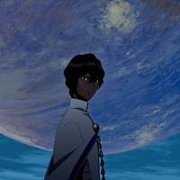
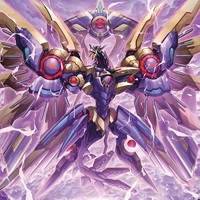

トルデリーゼ・トルンヴァルト

0
卓捨 不違
十卜 丁乂
トロヴァオ

鳥類大統領 U-ファルコン
オリオン
①：
あなたとそのクリーチャーが付与する【継続系】の持続回数は【∞】となる。
②：
あなたは【SPE/リベンジ】は【状態異常/継続ダメージ】を付与し、【防御無視】でダメージ判定を行う。
退かない、前に進む。百足みたいに
①：
あなたのクリーチャーはHPが【０】以下になっても消滅せず、瀕死～即死扱いとなる。
（復活Bが例外的に使用可能。ただし消費因子が＋１される）
（復活Bが例外的に使用可能。ただし消費因子が＋１される）
②：
あなたとそのクリーチャーが付与する【継続系】の持続回数は【∞】となる。
③：
あなたはAE【ライダーキック】を使用できる。
不安な現実に目覚めて、それでも彼女は生きていく。
①：
【創造PP：１０】のあなたのクリーチャー２体を対象として発動できる。
任意の創造系応用技を、【創造PP：３０】かつ【実消費PP：０】で宣言できる。
任意の創造系応用技を、【創造PP：３０】かつ【実消費PP：０】で宣言できる。
②：
①の効果で創造したクリーチャーは以下の効果を得る。
●攻撃力が【１０ｄ＋０】となる。
●あなたの他のクリーチャーは攻撃できない。
●あなたの全てのクリーチャーは攻撃対象とならない。
●このクリーチャーの消滅時、あなたの全てのクリーチャーを消滅し、あなたは【崩壊】ダメージを受ける。
●攻撃力が【１０ｄ＋０】となる。
●あなたの他のクリーチャーは攻撃できない。
●あなたの全てのクリーチャーは攻撃対象とならない。
●このクリーチャーの消滅時、あなたの全てのクリーチャーを消滅し、あなたは【崩壊】ダメージを受ける。
③：
他者のダイスロール結果時、あなたのクリーチャー１体を消滅させ、ダイスを１つ選んで発動できる。
その出目を【０】にする。
その出目を【０】にする。
①：
あなたの行った判定でクリティカルが２つ以上発生した場合に発動する。
あなたは【クリティカル数÷２】の因子ダイスを得る。
あなたは【クリティカル数÷２】の因子ダイスを得る。
②：
因子を【５d】消費して発動する。
任意のユニットに【マグタフ黒】【マグタフ：２】【マグタフEX：２】の効果をそれぞれ適用する。
任意のユニットに【マグタフ黒】【マグタフ：２】【マグタフEX：２】の効果をそれぞれ適用する。
効能：疲労の回復・予防、集中力の維持・改善、身体不調の改善・予防、
肌の不調（肌荒れ、肌の乾燥）の改善・予防、二日酔いに伴う食欲の低下・だるさの改善、
目の疲れの改善、虚弱体質の改善・予防、食欲不振時の栄養補給、吐き下しの改善、
虫歯痛の改善、抗不安作用、鎮静・催眠作用、生命活動の停止、とりあえず飲め。
肌の不調（肌荒れ、肌の乾燥）の改善・予防、二日酔いに伴う食欲の低下・だるさの改善、
目の疲れの改善、虚弱体質の改善・予防、食欲不振時の栄養補給、吐き下しの改善、
虫歯痛の改善、抗不安作用、鎮静・催眠作用、生命活動の停止、とりあえず飲め。
①：
あなたはカルマ【影の者】を得る。
この効果で取得する【影の者】は使用回数が【３回】となり、AE【不意打ち】には使用できない。
この効果で取得する【影の者】は使用回数が【３回】となり、AE【不意打ち】には使用できない。
②：
あなたのアタッチメント【気配遮断】は以下の効果となる。
●〔人型〕を対象としたAE【不意打ち】に併用することで、カルマ【殺人者：①】の効果を適用する。
●〔人型〕を対象としたAE【不意打ち】に併用することで、カルマ【殺人者：①】の効果を適用する。
闇の帳が、殺意さえ包み隠す。
この特性の①②の効果は１Rにいずれか１つしか使用できない。
①：
あなたがAE【エール】を宣言する場合、代わりにAE【電光石火】の発動処理を行っても良い。
この効果で発動する【電光石火】の効果は以下となる。
●対象の判定に、あなたの【敏捷】判定結果を加算する。
この効果で発動する【電光石火】の効果は以下となる。
●対象の判定に、あなたの【敏捷】判定結果を加算する。
②：
あなたが命中回避判定にAE【電光石火】を使用する場合、
【敏捷】の代わりに【俊敏】で置き換えることができる。
【敏捷】の代わりに【俊敏】で置き換えることができる。
「真実は唯一つだけ ただ誰よりも速く飛べばいい」
――或る歌の一節
――或る歌の一節
①：
あなたは【NPC特性/瞬間解除】を得る。あなたが解除判定に失敗した場合、この効果は同シーン中無効化される。
②：
あなたのACおよびENにそれぞれ発動する。
全ての敵は1Rの間、回避判定ダイスが【１つ】減少する。
この効果で判定ダイス数が【１】を下回る場合、そのユニットは代わりに【１d】の貫通ダメージを受ける。
全ての敵は1Rの間、回避判定ダイスが【１つ】減少する。
この効果で判定ダイス数が【１】を下回る場合、そのユニットは代わりに【１d】の貫通ダメージを受ける。
③：
あなたがメインアクションで計２回以上、応用技を宣言しているバトル中に１度だけ宣言できる。
あなたはＰＰを【１３ｄ】回復し、最大ＰＰを超過した分だけＨＰを回復する。
（この回復は戦闘不能状態の場合も適用し、HPが０を上回った場合は復活する）
その後、敵全体に【このバトル中に宣言した応用技の数×２d】を威力として物理攻撃を行う。
あなたはＰＰを【１３ｄ】回復し、最大ＰＰを超過した分だけＨＰを回復する。
（この回復は戦闘不能状態の場合も適用し、HPが０を上回った場合は復活する）
その後、敵全体に【このバトル中に宣言した応用技の数×２d】を威力として物理攻撃を行う。
その翼は天壌無窮にして、勝利へ向け幾度でも羽ばたく。
①：
あなたが【SPE/切札】を宣言した時に適用する。
あなたはHPを【２０d】回復する。この効果で回復したHPはバトル終了時まで最大値の制限を受けない。
あなたはHPを【２０d】回復する。この効果で回復したHPはバトル終了時まで最大値の制限を受けない。
②：
あなたが【SPE/切札】を宣言したバトル中、以下の効果をそれぞれ適用する。
●格闘攻撃（【AE/重撃】除く）のリザルト（命中回避判定～ダメージ判定）を２回行う。
●武器攻撃力が【６d＋０／防御無視】となる。
●【ギャンブル】状態となる。
●スマッシュクリティカルをクリティカル１つごとに得る。
●すべての技能値およびパラメータを【２０】として扱う。
●格闘攻撃（【AE/重撃】除く）のリザルト（命中回避判定～ダメージ判定）を２回行う。
●武器攻撃力が【６d＋０／防御無視】となる。
●【ギャンブル】状態となる。
●スマッシュクリティカルをクリティカル１つごとに得る。
●すべての技能値およびパラメータを【２０】として扱う。
生きているなら、どんな獣も射貫いて見せる。